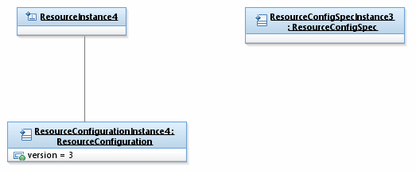

| Configuration Instance Diagrams Addendum Figures UML Documentation |
|  |
Properties:
| View | |||
| Name | Figure CI.08 - MTOSI TMD Profile Mechanism - Removing Association to Config Spec | Type | Object Diagram |
| Configuration Instance Diagrams Addendum Figures UML Documentation |